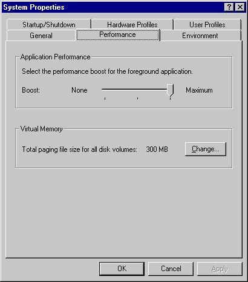
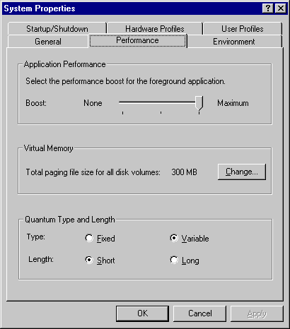

Since its release the Sysinternals NTFrob program has been a popular download. This is because Windows NT 4 Server provides no way to control the quantum (time-slice) lengths of threads, and Windows NT Workstation provides very little. The size of a quantum determines how long a thread will be able to execute on a CPU before the NT scheduler might decide to give a different thread of the same priority a turn to run. At the end of a quantum the scheduler can decay the priority of an executing thread if it has been previously boosted, which might cause it to be switched off the processor and be replaced with one of a higher priority. Long quantums generally favor CPU-intensive applications whereas short quantums are better for environments with many interactive threads of the same priority levels (see my June and July '98Windows NT Magazine NT Internals columns on the scheduler for more information).
As one of NT's dynamic tuning measures, quantum lengths hardwired into Workstation and Server assume certain workload characteristics. In Server, all processes have the same quantum length, which is relatively long. This makes Server conducive to environments where there are a small number of applications that are possibly computation-bound. Workstation's quantums are variable and shorter, where lengths can be influenced by whether a process owns the foreground window or not. This arrangement works well for systems where there are several applications running simultaneously, and the applications are interactive in nature. However, many NT users use Workstation or Server in roles that are more typical of the opposite product type, which has lead to a desire for quantum-configurability. Windows 2000 internally includes the quantum-knobs NTFrob's appeal has demonstrated users want, but unfortunately it doesn't expose them (it did in its first Beta).
Before describing Win2K's quantum settings, let's review what is present in NT 4. As I mentioned, NT 4 Server and Workstation have different quantum lengths. The Server and Workstation O/S image is identical, so the different lengths are taken from an internal quantum-length table that is filled in by NT during its initialization. The values used for Workstation and Server are shown below. The table contain three entries that specify quantum lengths expressed in quantum units. Three quantum units elapse every tick of NT's quantum-tracking timer, and a timer tick period is either 10 milliseconds or 15 milliseconds in length. Uniprocessor x86 systems generally have 10ms periods whereas multiprocessor x86 systems and Alphas have 15ms periods - the HAL is where the period length is defined and thus different vendors and motherboards can have different tick periods.
Workstation Quantum Table
| 6 | 12 | 18 |
Server Quantum Table
| 36 | 36 | 36 |
Table 1. NT 4 Quantum Tables
What indexes the table is the foreground window priority boost that you configure in the Control Panel System applet under the Performance Tab. The boost slider shown on the dialog (see the screenshot below) has three settings that correspond directly to the index used in the quantum table. Threads belonging to background windows always have a boost index of 0. Foreground threads get their index from the setting in the applet, so their index is 0, 1 or 2 into the table. With the Server quantum table the foreground setting is effectively ignored since the quantum table's entries are all identical, but on Workstation foreground threads can have quantums that are 2 or 3 times longer than background threads. This quantum stretch can enhance the responsiveness of foreground applications. Performing the math with the quantum unit lengths, Workstation threads have quantums that are typically between 10 and 60ms, whereas Server threads have quantums of 120ms.
Figure 1. NT 4 Foreground Boost Slider
So what exactly happens when you move the slider and hit "Apply"? Two things. The first is that the applet writes the boost setting to HKLM\System\CurrentControlSet\Control\PriorityControl\Win32PrioritySeperation. This is so that NT can remember your setting across boots. The second is that the applet calls the native NT function NtSetSystemInformation (see my January 1997 Dr. Dobb's Journal NTRegmon article for more about the native API). The call communicates the setting to NT's scheduler, which sets the quantum table index variable PsPrioritySeparation. The table itself is named PspForegroundQuantum. When a process is created a variable in its control block is set to the background quantum length (index 0) retrieved from the table. Whenever a thread is created or starts a new quantum it obtains its quantum length from the length stored in the control block of its owning process.
The Win32 kernel-mode component Win32K.sys is responsible for keeping track of which process owns the foreground window, so when this changes it calls the NT Process Manager function PsSetProcessPriorityByClass. PsSetProcessPriorityByClass is called once for the process that is losing the foreground and again for the process that is gaining it, and the function sets the quantum length in the process' control block to the value obtained from the PspForegroundQuantum table - PsPrioritySeparation is used as an index for the process that owns the foreground window.
Win2K keeps the same concept as a quantum table and a foreground window boost, but it has introduced significantly more flexibility, and quantum lengths are no longer tied in any way to whether the system is Workstation or Server. The quantum table is still 3 entries, but there are now 4 different sets of values that the table can contain. All of Win2K's quanutum settings were exposed in Win2K Beta 1, where two settings in the Win2K Performance dialog, seen below, determined which values are used: the quantum type and the quantum length. The quantum type can be fixed or variable. If the quantum type is fixed then foreground window threads always have the same quantum as background threads because the quantum table is initialized with 3 identical values. When the type is variable the values are different so the boost slider has an effect on quantum lengths. The quantum length setting is used to select short or long quantum values. Unfortuately, in the release version of Win2K this control is not present - you'll have to wait for a Sysinternals tool to make them accessible for you.
Figure 2. Win2K Quantum Controls
The quantum values in the 4 combinations possible with these two controls are shown below. Like in NT 4, the PsForegroundQuantum is the name of the table. Unlike NT 4, however, the 4 tables are all present in memory and PsForegroundQuantum is directed to point at the current one. In Win2K the NT 4 Workstation quantums can be achieved with Short-Variable and the NT 4 Server quantums are achievable with Long-Fixed.
| Short | Long | |||||||
|---|---|---|---|---|---|---|---|---|
| Variable |
|
|
||||||
| Fixed |
|
|
Table 2. Win2K Quantum Tables
The Win2K performance applet causes the quantum settings to be written to the same Registry value for storage as in NT 4 and it invokes NtSetSystemInformation to convey the user's choice to the scheduler. Instead of just specifying a boost, though, it passes the quantum type and length information as well. This quantum control value is encoded as shown below:
| S | L | F | V | B1 | B0 |
| 5 | 4 | 3 | 2 | 1 | 0 |
Table 3. Bit Layout for Win2K Quantum Control
Here are the definitions for the bit positions - a bit value of 1 indicates that the choice is in effect:
Note that with this encoding method that "undefined" combinations are possible (e.g. having both the Fixed and Variable bits set or cleared). The scheduler falls back to its NT 4 logic in such cases (the quantums would be fixed on Server and variable on Workstation if the F and V bits are identical).
The quantum control value is decoded to set up the PsForegroundQuantum and PsPrioritySeparation by the new function PsChangeQuantumTable. After determining the new quantum settings PsChangeQuantumTable proceeds to update the quantum values stored in all the existing process control blocks so that changes have global effect - this is something that NTFrob does as well.
The flexible new quantum configuration in Win2K should satisfy those that want more precise control over the scheduler time slicing policy. I think that its fair to say that NTFrob significantly influenced these changes.